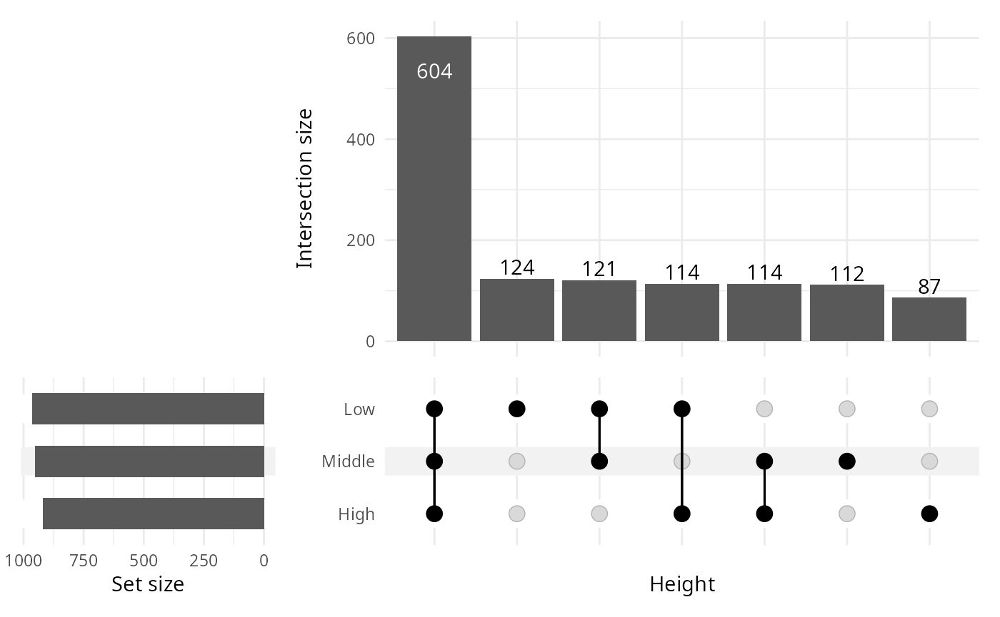
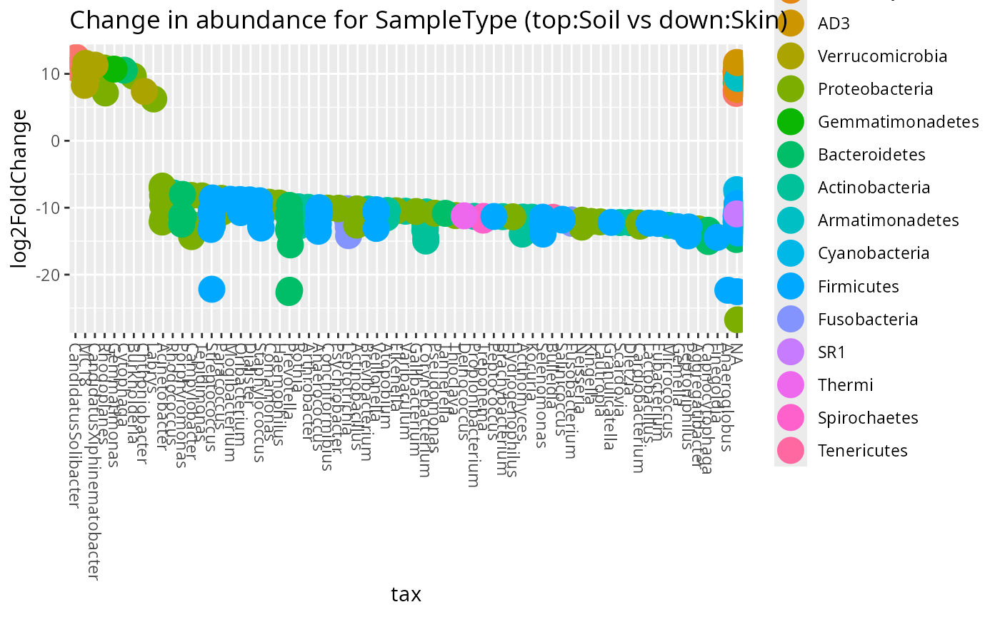

Permanova
data_fungi_woNA4height <- subset_samples(data_fungi, !is.na(data_fungi@sam_data$Height))
res_ado <- adonis_pq(data_fungi_woNA4height, "Tree_name+Height")
knitr::kable(res_ado)| Df | SumOfSqs | R2 | F | Pr(>F) | |
|---|---|---|---|---|---|
| Model | 63 | 36.92559 | 0.5881754 | 1.518899 | 0.001 |
| Residual | 67 | 25.85431 | 0.4118246 | NA | NA |
| Total | 130 | 62.77990 | 1.0000000 | NA | NA |
Graph Test
data_fungi_woNA4height <- subset_samples(data_fungi, !is.na(data_fungi@sam_data$Height))
graph_test_pq(data_fungi_woNA4height, "Height")

Ordination
PCoA
plot_ordination_pq(data_fungi, method = "robust.aitchison", ordination_method = "PCoA", color = "Height")
#> Warning: `aes_string()` was deprecated in ggplot2 3.0.0.
#> ℹ Please use tidy evaluation idioms with `aes()`.
#> ℹ See also `vignette("ggplot2-in-packages")` for more information.
#> ℹ The deprecated feature was likely used in the phyloseq package.
#> Please report the issue at <https://github.com/joey711/phyloseq/issues>.
#> This warning is displayed once every 8 hours.
#> Call `lifecycle::last_lifecycle_warnings()` to see where this warning was
#> generated.
plot_ordination(data_fungi,
ordination =
ordinate(data_fungi, method = "PCoA", distance = "bray"), color = "Height"
)
NMDS
plot_ordination_pq(data_fungi, method = "robust.aitchison", color = "Height") +
plot_ordination_pq(data_fungi, method = "bray", color = "Height")
#> Run 0 stress 0.1133285
#> Run 1 stress 0.2031998
#> Run 2 stress 0.1425415
#> Run 3 stress 0.1273063
#> Run 4 stress 0.1950973
#> Run 5 stress 0.1620808
#> Run 6 stress 0.1595056
#> Run 7 stress 0.1796361
#> Run 8 stress 0.1721042
#> Run 9 stress 0.1980584
#> Run 10 stress 0.1284201
#> Run 11 stress 0.1971293
#> Run 12 stress 0.2005546
#> Run 13 stress 0.168934
#> Run 14 stress 0.1812448
#> Run 15 stress 0.1881208
#> Run 16 stress 0.1575817
#> Run 17 stress 0.162739
#> Run 18 stress 0.132636
#> Run 19 stress 0.152047
#> Run 20 stress 0.2041781
#> *** Best solution was not repeated -- monoMDS stopping criteria:
#> 13: stress ratio > sratmax
#> 7: scale factor of the gradient < sfgrmin
#> Run 0 stress 0.2437839
#> Run 1 stress 0.2485997
#> Run 2 stress 0.2472849
#> Run 3 stress 0.2450257
#> Run 4 stress 0.2394284
#> ... New best solution
#> ... Procrustes: rmse 0.04540589 max resid 0.1926736
#> Run 5 stress 0.2471695
#> Run 6 stress 0.2513681
#> Run 7 stress 0.2429278
#> Run 8 stress 0.2489632
#> Run 9 stress 0.2489441
#> Run 10 stress 0.2453355
#> Run 11 stress 0.2466278
#> Run 12 stress 0.2455799
#> Run 13 stress 0.2483674
#> Run 14 stress 0.2460726
#> Run 15 stress 0.2460076
#> Run 16 stress 0.246254
#> Run 17 stress 0.2453415
#> Run 18 stress 0.2471357
#> Run 19 stress 0.2432681
#> Run 20 stress 0.2522929
#> *** Best solution was not repeated -- monoMDS stopping criteria:
#> 3: no. of iterations >= maxit
#> 17: stress ratio > sratmax

UMAP
df_umap <- umap_pq(data_fungi)
#> Warning: The `x` argument of `as_tibble.matrix()` must have unique column names if
#> `.name_repair` is omitted as of tibble 2.0.0.
#> ℹ Using compatibility `.name_repair`.
#> ℹ The deprecated feature was likely used in the MiscMetabar package.
#> Please report the issue at
#> <https://github.com/adrientaudiere/MiscMetabar/issues>.
#> This warning is displayed once every 8 hours.
#> Call `lifecycle::last_lifecycle_warnings()` to see where this warning was
#> generated.
ggplot(df_umap, aes(x = x_umap, y = y_umap, col = Height)) +
geom_point(size = 2)
Compare two (group of) samples
Biplot
data_fungi_low_high <- subset_samples(
data_fungi,
data_fungi@sam_data$Height %in%
c("Low", "High")
)
data_fungi_low_high <- subset_taxa_pq(
data_fungi_low_high,
taxa_sums(data_fungi_low_high) > 5000
)
biplot_pq(data_fungi_low_high, fact = "Height", merge_sample_by = "Height")
Compare two (group of) samples with a table
compare_pairs_pq(data_fungi_low_high,
bifactor = "Height",
merge_sample_by = "Height",
modality = "Time"
)
#> # A tibble: 4 × 13
#> modality nb_ASV_High nb_ASV_Low nb_shared_ASV div_High div_Low nb_shared_seq
#> <chr> <dbl> <dbl> <dbl> <dbl> <dbl> <dbl>
#> 1 0 12 16 9 1.8 1.37 57639
#> 2 5 20 18 14 1.95 1.98 76006
#> 3 10 11 13 10 1.18 1.25 47042
#> 4 15 17 19 12 2 2.04 161348
#> # ℹ 6 more variables: percent_shared_seq_High <dbl>,
#> # percent_shared_seq_Low <dbl>, percent_shared_ASV_High <dbl>,
#> # percent_shared_ASV_Low <dbl>, ratio_nb_High_Low <dbl>,
#> # ratio_div_High_Low <dbl>Venn diagram

ggvenn_pq(data_fungi, fact = "Height") +
ggplot2::scale_fill_distiller(palette = "BuPu", direction = 1) +
labs(title = "Share number of ASV among Height in tree")
ggvenn_pq(data_fungi, fact = "Height", min_nb_seq = 5000) +
ggplot2::scale_fill_distiller(palette = "BuPu", direction = 1) +
labs(title = "Share number of ASV with more than 5000 seqs")
ggvenn_pq(data_fungi,
fact = "Height", taxonomic_rank = "Genus",
min_nb_seq = 100
) +
ggplot2::scale_fill_distiller(palette = "BuPu", direction = 1) +
labs(title = "Share number of Genus represented by at least one ASV with more than 100 seqs")
Upset plot
Venn diagram can quickly become complex to read when the number of modalities increase. One graphical solution is upset plot. MiscMetabar propose a solution based on the package ComplexUpset.
upset_pq(data_fungi, fact = "Height")
#> Warning: Using `size` aesthetic for lines was deprecated in ggplot2 3.4.0.
#> ℹ Please use `linewidth` instead.
#> ℹ The deprecated feature was likely used in the ComplexUpset package.
#> Please report the issue at
#> <https://github.com/krassowski/complex-upset/issues>.
#> This warning is displayed once every 8 hours.
#> Call `lifecycle::last_lifecycle_warnings()` to see where this warning was
#> generated.
upset_pq(data_fungi, fact = "Time")
ComplexUpset package allow powerful configuration of you
plot as you can see in the following figure.
upset_pq(
data_fungi,
fact = "Time",
width_ratio = 0.2,
annotations = list(
"Sequences per ASV \n (log10)" = (
ggplot(mapping = aes(y = log10(Abundance)))
+
geom_jitter(aes(
color =
Abundance
), na.rm = TRUE)
+
geom_violin(alpha = 0.5, na.rm = TRUE) +
theme(legend.key.size = unit(0.2, "cm")) +
theme(axis.text = element_text(size = 12))
),
"ASV per phylum" = (
ggplot(mapping = aes(fill = Phylum))
+
geom_bar() +
ylab("ASV per phylum") +
theme(legend.key.size = unit(0.2, "cm")) +
theme(axis.text = element_text(size = 12))
)
)
)
Change in abundance across a factor
Benchdamic
There is a lot of available methods. Please refer to R package benchdamic for a list of method and a implementation of a benchmark for your data.
See also Gamboa-Tuz et al. who claimed that “[…] compositional DA methods are not beneficial but rather lack sensitivity, show increased variability in constant-abundance spike-ins, and, most surprisingly, more frequently produce paradoxical results with DA in the wrong direction for the low-diversity microbiome. Conversely, commonly used methods in microbiome literature, such as LEfSe, the Wilcoxon test, and RNA-seq-derived methods, performed best.”
Using Deseq2 package
data("GlobalPatterns", package = "phyloseq")
GP <- subset_samples(
GlobalPatterns,
GlobalPatterns@sam_data$SampleType %in% c("Soil", "Skin")
)
plot_deseq2_pq(GP, c("SampleType", "Soil", "Skin"), pval = 0.001)
Using Linear discriminant analysis (LDA) Effect Size (LEfSe)
res_lefse <- lefser_pq(data_fungi, bifactor = "Height", modalities = c("Low", "High"))
lefser::lefserPlot(res_lefse)
#> Warning in geom_bar(stat = "identity", aes(fill = class), color = "black", :
#> Ignoring unknown parameters: `size`
res_lefse_clade <- lefser_pq(data_fungi, bifactor = "Height", modalities = c("Low", "High"), by_clade = TRUE)
lefser::lefserPlot(res_lefse_clade)
#> Warning in geom_bar(stat = "identity", aes(fill = class), color = "black", :
#> Ignoring unknown parameters: `size`
Using ALDEx2 package
res_aldex <- aldex_pq(data_fungi_mini, bifactor = "Height", modalities = c("Low", "High"))
ALDEx2::aldex.plot(res_aldex, type = "volcano")
Using ancombc
res_ancombc <- ancombc_pq(
data_fungi_mini,
fact = "Height",
levels_fact = c("Low", "High"),
verbose = TRUE
)
#> Warning: The group variable has < 3 categories
#> The multi-group comparisons (global/pairwise/dunnet/trend) will be deactivated
#> Warning: The number of taxa used for estimating sample-specific biases is: 11
#> A large number of taxa (>50) is required for the consistent estimation of biases
#> Warning: Estimation of sampling fractions failed for the following samples:
#> B18-006-B_S19_MERGED.fastq.gz, DY5-004-B_S96_MERGED.fastq.gz, W26-001-B_S165_MERGED.fastq.gz, X24-009-B_S170_MERGED.fastq.gz, X29-004-B_S174_MERGED.fastq.gz, Y28-002-B_S178_MERGED.fastq.gz, Z29-001-H_S185_MERGED.fastq.gz
#> These samples may have an excessive number of zero valuesSession information
sessionInfo()
#> R version 4.5.2 (2025-10-31)
#> Platform: x86_64-pc-linux-gnu
#> Running under: Kali GNU/Linux Rolling
#>
#> Matrix products: default
#> BLAS: /usr/lib/x86_64-linux-gnu/openblas-pthread/libblas.so.3
#> LAPACK: /usr/lib/x86_64-linux-gnu/openblas-pthread/libopenblasp-r0.3.29.so; LAPACK version 3.12.0
#>
#> locale:
#> [1] LC_CTYPE=fr_FR.UTF-8 LC_NUMERIC=C
#> [3] LC_TIME=fr_FR.UTF-8 LC_COLLATE=fr_FR.UTF-8
#> [5] LC_MONETARY=fr_FR.UTF-8 LC_MESSAGES=fr_FR.UTF-8
#> [7] LC_PAPER=fr_FR.UTF-8 LC_NAME=fr_FR.UTF-8
#> [9] LC_ADDRESS=fr_FR.UTF-8 LC_TELEPHONE=fr_FR.UTF-8
#> [11] LC_MEASUREMENT=fr_FR.UTF-8 LC_IDENTIFICATION=fr_FR.UTF-8
#>
#> time zone: Europe/Paris
#> tzcode source: system (glibc)
#>
#> attached base packages:
#> [1] grid stats4 stats graphics grDevices utils datasets
#> [8] methods base
#>
#> other attached packages:
#> [1] doRNG_1.8.6.2 rngtools_1.5.2
#> [3] foreach_1.5.2 ALDEx2_1.42.0
#> [5] latticeExtra_0.6-31 lattice_0.22-7
#> [7] zCompositions_1.5.0-5 survival_3.8-3
#> [9] truncnorm_1.0-9 MASS_7.3-65
#> [11] lefser_1.20.2 SummarizedExperiment_1.40.0
#> [13] Biobase_2.70.0 GenomicRanges_1.62.1
#> [15] Seqinfo_1.0.0 IRanges_2.44.0
#> [17] S4Vectors_0.48.0 BiocGenerics_0.56.0
#> [19] generics_0.1.4 MatrixGenerics_1.22.0
#> [21] matrixStats_1.5.0 MiscMetabar_0.14.5
#> [23] purrr_1.2.0 dplyr_1.1.4
#> [25] dada2_1.38.0 Rcpp_1.1.0
#> [27] ggplot2_4.0.1 phyloseq_1.54.0
#>
#> loaded via a namespace (and not attached):
#> [1] coin_1.4-3 gld_2.6.8
#> [3] nnet_7.3-20 Biostrings_2.78.0
#> [5] TH.data_1.1-5 vctrs_0.6.5
#> [7] energy_1.7-12 digest_0.6.39
#> [9] png_0.1-8 shape_1.4.6.1
#> [11] proxy_0.4-28 Exact_3.3
#> [13] BiocBaseUtils_1.12.0 rbiom_2.2.1
#> [15] ggrepel_0.9.6 deldir_2.0-4
#> [17] parallelly_1.46.0 permute_0.9-8
#> [19] fontLiberation_0.1.0 pkgdown_2.2.0
#> [21] reshape2_1.4.5 withr_3.0.2
#> [23] xfun_0.55 ggfun_0.2.0
#> [25] ggbeeswarm_0.7.3 emmeans_2.0.1
#> [27] gmp_0.7-5 systemfonts_1.3.1
#> [29] gtools_3.9.5 ragg_1.5.0
#> [31] tidytree_0.4.6 zoo_1.8-15
#> [33] GlobalOptions_0.1.3 pbapply_1.7-4
#> [35] Formula_1.2-5 httr_1.4.7
#> [37] rhdf5filters_1.22.0 rhdf5_2.54.1
#> [39] rstudioapi_0.17.1 ggVennDiagram_1.5.4
#> [41] base64enc_0.1-3 ScaledMatrix_1.18.0
#> [43] quadprog_1.5-8 SparseArray_1.10.7
#> [45] doParallel_1.0.17 xtable_1.8-4
#> [47] stringr_1.6.0 desc_1.4.3
#> [49] ade4_1.7-23 evaluate_1.0.5
#> [51] S4Arrays_1.10.1 Rfast_2.1.5.2
#> [53] hms_1.1.4 irlba_2.3.5.1
#> [55] colorspace_2.1-2 ggnetwork_0.5.14
#> [57] reticulate_1.44.1 phyloseqGraphTest_0.1.1
#> [59] readxl_1.4.5 magrittr_2.0.4
#> [61] readr_2.1.6 viridis_0.6.5
#> [63] modeltools_0.2-24 ggtree_4.0.1
#> [65] DECIPHER_3.6.0 scuttle_1.20.0
#> [67] class_7.3-23 Hmisc_5.2-4
#> [69] pillar_1.11.1 nlme_3.1-168
#> [71] iterators_1.0.14 sna_2.8
#> [73] pwalign_1.6.0 decontam_1.30.0
#> [75] compiler_4.5.2 beachmat_2.26.0
#> [77] RSpectra_0.16-2 stringi_1.8.7
#> [79] biomformat_1.38.0 DescTools_0.99.60
#> [81] minqa_1.2.8 GenomicAlignments_1.46.0
#> [83] plyr_1.8.9 crayon_1.5.3
#> [85] abind_1.4-8 scater_1.38.0
#> [87] gridGraphics_0.5-1 ggtext_0.1.2
#> [89] locfit_1.5-9.12 haven_2.5.5
#> [91] bit_4.6.0 mia_1.18.0
#> [93] rootSolve_1.8.2.4 sandwich_3.1-1
#> [95] libcoin_1.0-10 codetools_0.2-20
#> [97] multcomp_1.4-29 textshaping_1.0.4
#> [99] directlabels_2025.6.24 BiocSingular_1.26.1
#> [101] openssl_2.3.4 bslib_0.9.0
#> [103] slam_0.1-55 e1071_1.7-16
#> [105] lmom_3.2 multtest_2.66.0
#> [107] MultiAssayExperiment_1.36.1 splines_4.5.2
#> [109] circlize_0.4.17 sparseMatrixStats_1.22.0
#> [111] cellranger_1.1.0 interp_1.1-6
#> [113] gridtext_0.1.5 knitr_1.50
#> [115] utf8_1.2.6 lme4_1.1-38
#> [117] fs_1.6.6 checkmate_2.3.3
#> [119] DelayedMatrixStats_1.32.0 Rdpack_2.6.4
#> [121] expm_1.0-0 gsl_2.1-9
#> [123] ggplotify_0.1.3 estimability_1.5.1
#> [125] tibble_3.3.0 Matrix_1.7-4
#> [127] tzdb_0.5.0 pkgconfig_2.0.3
#> [129] network_1.19.0 tools_4.5.2
#> [131] cachem_1.1.0 rbibutils_2.4
#> [133] cigarillo_1.0.0 numDeriv_2016.8-1.1
#> [135] viridisLite_0.4.2 DBI_1.2.3
#> [137] zigg_0.0.2 venneuler_1.1-4
#> [139] fastmap_1.2.0 rmarkdown_2.30
#> [141] scales_1.4.0 fillpattern_1.0.2
#> [143] Rsamtools_2.26.0 sass_0.4.10
#> [145] patchwork_1.3.2 coda_0.19-4.1
#> [147] rpart_4.1.24 reformulas_0.4.3
#> [149] farver_2.1.2 mgcv_1.9-4
#> [151] yaml_2.3.12 foreign_0.8-90
#> [153] cli_3.6.5 lifecycle_1.0.4
#> [155] askpass_1.2.1 mvtnorm_1.3-3
#> [157] bluster_1.20.0 backports_1.5.0
#> [159] BiocParallel_1.44.0 gtable_0.3.6
#> [161] umap_0.2.10.0 ANCOMBC_2.12.0
#> [163] parallel_4.5.2 ape_5.8-1
#> [165] testthat_3.3.1 CVXR_1.0-15
#> [167] jsonlite_2.0.0 bitops_1.0-9
#> [169] bit64_4.6.0-1 brio_1.1.5
#> [171] Rtsne_0.17 yulab.utils_0.2.3
#> [173] vegan_2.7-2 BiocNeighbors_2.4.0
#> [175] TreeSummarizedExperiment_2.18.0 RcppParallel_5.1.11-1
#> [177] jquerylib_0.1.4 lazyeval_0.2.2
#> [179] htmltools_0.5.9 rJava_1.0-11
#> [181] rappdirs_0.3.3 glue_1.8.0
#> [183] XVector_0.50.0 gdtools_0.4.4
#> [185] treeio_1.34.0 ComplexUpset_1.3.3
#> [187] jpeg_0.1-11 gridExtra_2.3
#> [189] boot_1.3-32 igraph_2.2.1
#> [191] R6_2.6.1 tidyr_1.3.1
#> [193] DESeq2_1.50.2 SingleCellExperiment_1.32.0
#> [195] ggiraph_0.9.2 Rmpfr_1.1-2
#> [197] forcats_1.0.1 labeling_0.4.3
#> [199] cluster_2.1.8.1 Rhdf5lib_1.32.0
#> [201] aplot_0.2.9 nloptr_2.2.1
#> [203] statnet.common_4.13.0 DirichletMultinomial_1.52.0
#> [205] DelayedArray_0.36.0 tidyselect_1.2.1
#> [207] vipor_0.4.7 microbiome_1.32.0
#> [209] htmlTable_2.4.3 xml2_1.5.1
#> [211] fontBitstreamVera_0.1.1 rsvd_1.0.5
#> [213] S7_0.2.1 fontquiver_0.2.1
#> [215] data.table_1.17.8 htmlwidgets_1.6.4
#> [217] RColorBrewer_1.1-3 hwriter_1.3.2.1
#> [219] rlang_1.1.6 lmerTest_3.1-3
#> [221] ShortRead_1.68.0 ggnewscale_0.5.2
#> [223] beeswarm_0.4.0